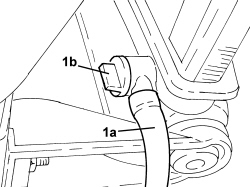
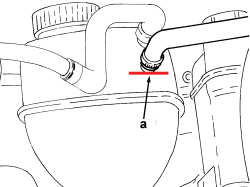

0010T20 ENGINE COOLANT - CHANGE
- Path
- Procedures > 00 MAINTENANCE > 0010 NEW VEHICLES AND MAINTENANCE > 0010T VEHICLE FLUIDS > 0010T20 ENGINE COOLANT - CHANGE
- Kind
- repair procedure (removal / refitting; the operation number is the code)
- Applies to
- all engines; all production periods
- Interactive page
- https://sloeber94.github.io/elrnDB-fCrm/en/#/194002307
Applies to: engines: 2.2; all production periods
- Position the vehicle on a lift.
- With the engine cold, undo the engine coolant reservoir cap.
Op. 7055B54 UNDER ENGINE PROTECTION/GUARD - R.R.
- Undo the radiator coolant drain plug.
- Tighten the coolant drain plug to the radiator.
- Loosen the bleed on the climate control system heater coolant supply pipe.
- Slowly introduce the recommended fluid into the circuit via the filler on the engine coolant supply reservoir.
Component | Type | Description | Classification | Qty. | Validity |
|---|---|---|---|---|---|
ENGINE COOLING CIRCUIT | Fluid | Mixture of 50% PARAFLU UP/water | CUNA NC 956-16 - ASTM D 3306 | 7.4 litres | 1.8 2.2 |
- Close the bleed screw on the coolant supply pipe to the climate control system heater as soon as the fluid comes out.
- Complete refilling with the recommended fluid until the "KALT COLD" reference is reached on the tank.
- Start up the engine and let it run.
- Stop the engine and let it cool down.
- If necessary, top up with the recommended fluid until the "KALT COLD" reference is reached.
- At the end of the above operations, make sure that the amount of fluid introduced into the system is at least equal to the amount collected during the draining stage.
Op. 7055B54 UNDER ENGINE PROTECTION/GUARD - R.R.
- Remove the vehicle from the lift.
Applies to: engines: 1.9 JTD 8v, 1.9 JTD 16v; all production periods
- Position the vehicle on a lift.
- With the engine cold, undo the engine coolant reservoir cap.
Op. 7055B54 UNDER ENGINE PROTECTION/GUARD - R.R.
- Undo the radiator coolant drain plug.
- Tighten the coolant drain plug to the radiator.
- Loosen the bleed screw on the water pump rigid inlet pipe.
- Slowly introduce the recommended fluid into the circuit via the filler on the engine coolant supply reservoir.
Component | Type | Description | Classification | Qty. | Validity |
|---|---|---|---|---|---|
ENGINE COOLING CIRCUIT | Fluid | Mixture of 50% PARAFLU UP/water | CUNA NC 956-16 - ASTM D 3306 | 7.7 litres | 1.9 JTD 8V 1.9 JTD 16V |
- Close the bleed screw on the water pump rigid inlet pipe as soon as the fluid comes out.
- Complete refilling with the recommended fluid until the "KALT COLD" reference is reached on the tank.
- Start up the engine and let it idle for about 2 minutes.
- In the meantime top up with the recommended fluid until the "KALT COLD" reference is reached.
- Tighten the cap on the engine coolant reservoir
- Remove the air from the circuit by carrying out period, gradual accelerations up to a speed of around 3000 rpm.
- If during this stage the level in the tank drops noticeably, return the engine speed to idling, open the cap very carefully and top up with the recommended fluid until the "KALT COLD" reference is reached, then close the cap and complete the removal of the air from the circuit.
- Stop the engine and wait until the circuit has cooled down sufficiently.
- If necessary, top up with the recommended fluid until the "KALT COLD" reference is reached.
- At the end of the above operations, make sure that the amount of fluid introduced into the system is at least equal to the amount collected during the draining stage.
Op. 7055B54 UNDER ENGINE PROTECTION/GUARD - R.R.
- Remove the vehicle from the lift.
Applies to: engines: 2.4 JTD 20v; all production periods
- Position the vehicle on a lift.
- With the engine cold, undo the engine coolant reservoir cap.
Op. 7055B54 UNDER ENGINE PROTECTION/GUARD - R.R.
- Undo the radiator coolant drain plug.
- Tighten the coolant drain plug to the radiator.
- Loosen the bleed screw on the water pump rigid inlet pipe.
- Slowly introduce the recommended fluid into the circuit via the filler on the engine coolant supply reservoir.
Component | Type | Description | Classification | Qty. | Validity |
|---|---|---|---|---|---|
ENGINE COOLING CIRCUIT | Fluid | Mixture of 50% PARAFLU UP/water | CUNA NC 956-16 - ASTM D 3306 | 8.4 litres | 2.4 JTD 20V |
- Close the bleed screw on the water pump rigid inlet pipe as soon as the fluid comes out.
- Complete refilling with the recommended fluid until the "Max" reference is reached on the tank.
- Start up the engine and let it idle for about 2 minutes.
- In the meantime top up with the recommended fluid until the "Max" reference is reached.
- Tighten the cap on the engine coolant reservoir.
- Remove the air from the circuit by carrying out period, gradual accelerations up to a speed of around 3000 rpm.
- If during this stage the level in the tank drops noticeably, return the engine speed to idling, open the cap very carefully and top up with the recommended fluid until the "Max" reference is reached, then close the cap and complete the removal of the air from the circuit.
- Stop the engine and wait until the circuit has cooled down sufficiently.
- If necessary, top up with the specified fluid to the "Max" notch.
- At the end of the above operations, make sure that the amount of fluid introduced into the system is at least equal to the amount collected during the draining stage.
Op. 7055B54 UNDER ENGINE PROTECTION/GUARD - R.R.
- Remove the vehicle from the lift.
Applies to: engines: 1.8; all production periods
DRAINING THE SYSTEM
- With the engine cold, undo the expansion tank cap.
1. Fit a pipe (1a), open the tap (1b) and collect the engine coolant in a suitable container.

Applies to: engines: 1.8; all production periods
FILLING THE SYSTEM
- Check/close the drainage tap and remove the pipe used for collecting the engine coolant.
- Fill the circuit with the specified fluid through the expansion tank filler until it reaches the degassing pipe connector (a).
Component | Type | Description | Classification | Qty. | Validity |
|---|---|---|---|---|---|
ENGINE COOLING CIRCUIT | Fluid | Mixture of 50% PARAFLU UP/water | CUNA NC 956-16 - ASTM D 3306 | 7.4 litres | 1.8 2.2 |

Applies to: engines: 1.8; all production periods
- Fit and tighten the expansion tank filler cap fully.
- Turn the air conditioning system OFF.
- Start the engine and remove the air from the circuit by carrying out periodic, gradual accelerations up to a speed of around 3000 rpm.
- This operation should be carried out until the thermostat opens and the fan switches on and off at least 3 times.
- Stop the engine and wait until the circuit has cooled down sufficiently.
- Check whether the fluid in the tank needs topping up to the Kalt Cold level.
Topics linked from this page (1)
Topics that link to this page (47)
- 1004B10 POWER UNIT WITH MANUAL GEARBOX - R.R
- 1004B14 POWER UNIT WITH AUTOMATIC TRANSMISSION R + R
- 1016C10 SINGLE CYLINDER HEAD - R.R. AND REPLACE GASKET
- 1020D10 FRONT CRANKSHAFT OIL SEAL COVER - R + R AND REPLACE SEALS WITH TIMING BELT REMOVED
- 1028H10 CONNECTING ROD AND PISTON SET - R.R
- 1028H20 PISTON WITH CONNECTING ROD - R.R
- 1036L10 CAMSHAFTS IN CAMSHAFT HOUSING - R.R. - INCLUDES CAMSHAFT HOUSING REPLACEMENT IF NECESSARY
- 1048B50 TURBOCHARGER INTERCOOLER - R + R
- 1056B17 THROTTLE BODY INTERGRAL WITH DVL - R R
- 1056B64 COOLANT TEMPERATURE SENSOR ON RADIATOR - R.R.
- 1064A27 PIPE BETWEEN VACUUM RESERVOIR AND ACTUATOR CONTROL SOLENOID VALVE - R.R.
- 1072B10 INLET MANIFOLD - R + R AND REPLACE SEAL
- 1072C44 EXHAUST MANIFOLD HEAT SHIELD - R+R
- 1080B40 CATALYTIC PRE-CONVERTER - R.R
- 1080B62 CATALYTIC CONVERTER - R + R
- 1080C80 EXHAUST GAS/WATER HEAT EXCHANGER FOR EGR SYSTEM - R.R
- 1080C83 EXHAUST GAS INLET PIPING FROM EXHAUST MANIFOLD TO HEAT EXCHANGER EGR - R R
- 1084B36 ENGINE OIL FILTER MOUNTING AND HEAT EXCHANGER - R.R
- 1084B40 ENGINE OIL DELIVERY PIPE TO TURBOCHARGER - R + R
- 1084B42 ENGINE OIL RETURN PIPE FROM TURBO - R + R
- 1084C10 ENGINE OIL HEAT EXCHANGER - R + R
- 1088B10 ENGINE COOLANT SUPPLY RESERVOIR - R.R.
- 1088B12 ENGINE COOLANT RESERVOIR MOUNT - R R
- 1088B20 ENGINE COOLING RADIATOR - R + R
- 1088C10 WATER PUMP - R + R
- 1088C30 THERMOSTAT UNIT - R+R
- 1088C36 THERMOSTAT SUPPORT - R.R.
- 1088C40 THERMOSTAT- R + R
- 1088D10 LOWER RADIATOR COOLANT OUTLET HOSE - R.R.
- 1088D14 UPPER RADIATOR COOLANT OUTLET HOSE - R.R.
- 1088D24 WATER PUMP RIGID COOLANT INLET PIPE - R.R.
- 1088D31 SLEEVE FROM COOLANT TANK TO INTERMEDIATE RIGID PIPE - R R
- 1088D33 WATER PUMP FEED INTERMEDIATE PIPING - R R
- 1088D35 WATER PUMP FEED RIGID PIPE FITTING SLEEVE - R R
- 1088D39 RIGID PIPE BETWEEN THERMOSTAT AND OIL FILTER MOUNTING - R.R.
- 1088D56 ENGINE OIL HEAT EXCHANGER DELIVERY AND RETURN DUPLEX RIGID PIPING - R R
- 1088D59 COOLANT SUPPLY PIPE TO THROTTLE BODY - R.R.
- 1088D60 COOLANT RETURN PIPE FROM THROTTLE BODY - R.R.
- 1088E11 FANS WITH SINGLE ENGINE DUCT - R+R
- 2130A27 DELIVERY AND RETURN DUPLEX PIPING OF AUTOMATIC GEARBOX OIL TO COOLING RADIATOR - R R
- 5010A12 HEATER WATER SUPPLY PIPE - R.R.
- 5010A16 HEATER WATER RETURN PIPE - R.R.
- 5020M10 INDEPENDENT HEATER UNIT - R R
- 5020M58 HOSE FOR COOLANT ENTERING ADDITIONAL SELF-STANDING HEATER UNIT - R R
- 5020M60 FLEXIBLE PIPING FOR COOLANT EXITING FROM ADDITIONAL SELF-STANDING HEATER UNIT - R R
- 5520B10 STARTER MOTOR - R+R
- 5530A10 ALTERNATOR - R+R